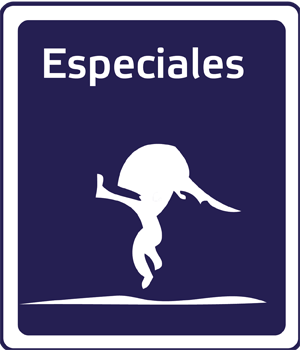

Caja de bateo
Programa de televisión que aborda semanalmente la actividad de la Liga Mexicana de Beisbol

Radio en Vivo
CORTV Televisión
-
Infantil
Es la sección de entretenimiento dirigida a la comunidad infantil y juvenil.
-
Cultura
Especializada en la difución de actividades y eventos culturales en el estado de Oaxaca..
-
Deportes
Especialistas en la difusión de actividades deportivas. La Ciclista, La temporada anual de beisbol.
-

Entretenimiento
Sección enfocada al esparcimiento de la comunidad oaxaqueña, tanto chicos y grandes.
-
Opinión
Dar a conocer los diferentes sistemas y trabajos y todas las instancias gubernamentales.
-

Especiales
Enfocada a difundir los eventos anuales caracteristicos de Oaxaca. Ejemplo la Guelaguetza 2014
Ultimas noticias - CORTV
-
Gabino Cue Entrega Ambulancias
El señor gobernador entrego hoy 12 ambulancias en el municipio de San Felipe Texalapa, donde lo recibieron con el .Leer más...
-
Gabino Cue Carretera a la costa
El señor gobernador rompio liston del tramo Oaxaca - Miahuatlan de la carretera a la costa.Leer más...
-
Gabino Cue Entrega Ambulancias
El señor gobernador entrego hoy 12 ambulancias en el municipio de San Felipe Texalapa, donde lo recibieron con el .Leer más...
-
Gabino Cue Carretera a la costa
El señor gobernador rompio liston del tramo Oaxaca - Miahuatlan de la carretera a la costa.Leer más...
-
Gabino Cue Entrega Ambulancias
El señor gobernador entrego hoy 12 ambulancias en el municipio de San Felipe Texalapa, donde lo recibieron con el .Leer más...
CORTV - Radio
El programa que atiende e informa a nuestros productores agropecuarios, pesqueros, acuicolas y forestales.
Leer más.